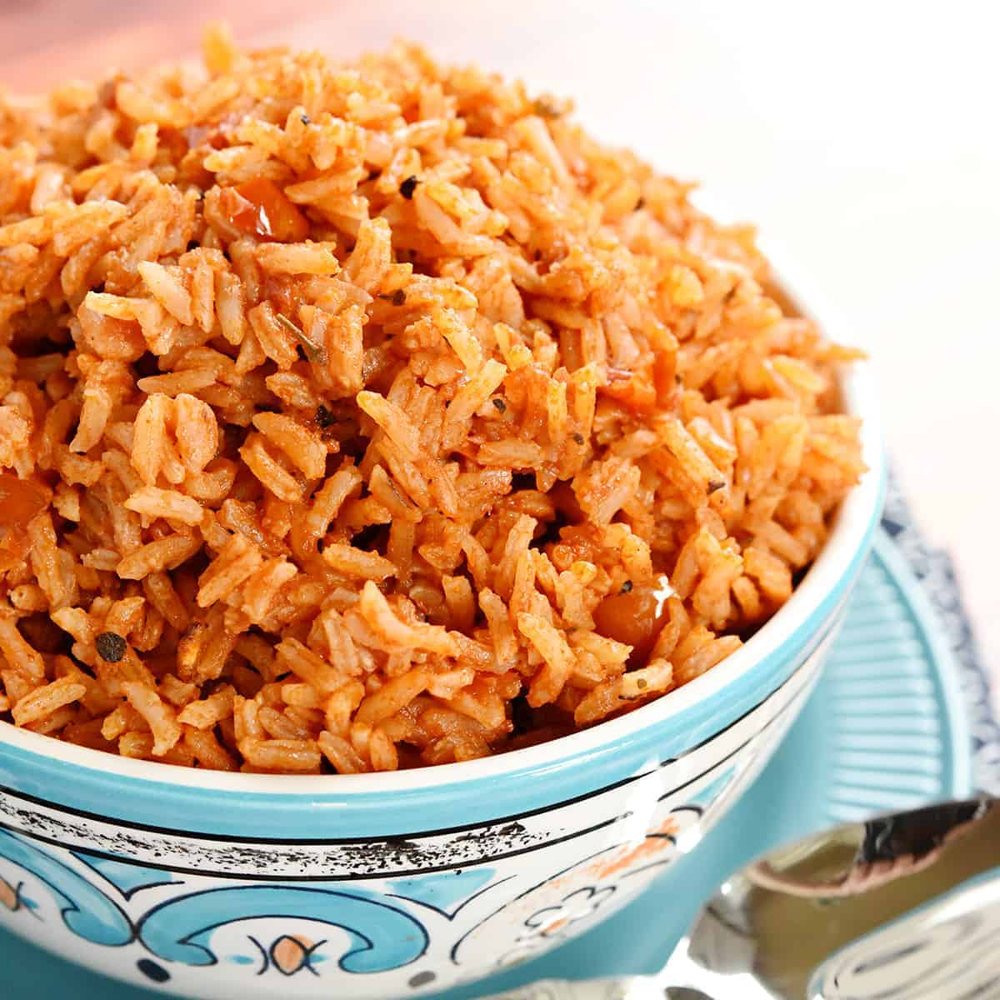

Spanish Rice (Lazy Way)
Ingredients
- 2 cups Long Grain Rice
- 2 teaspoon Chicken & Tomatoe Bouillon
- 16 ounces Your Preferred Salsa
- Water (amount same as for normal 2 cups of whichever rice you have chosen)
Making Spanish Rice is incredibly simple! Especially if you have a handy rice cooker nearby. Gather up your ingredients and
let's begin!
- Thoroughly mix the bouillon into the water.
- Place rice into the cooker with the water and salsa. Be sure to stir well, so that everything is evenly mixed.
- Turn on the rice cooker and you're done! Be sure to check back a few times to mix the rice as the salsa will clump at the bottom and burn.
Yum!

Congratulations! You now have successfuly made your first batch of Spanish Rice with minimal effort!